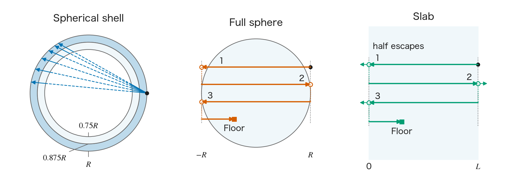
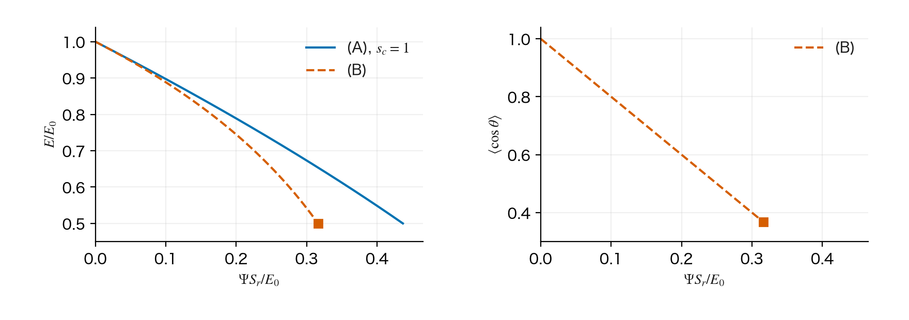
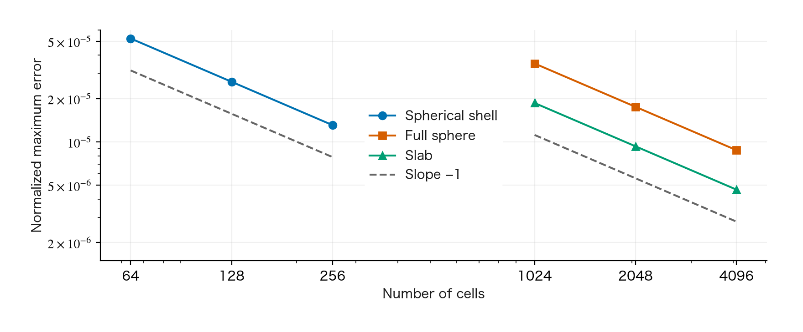

Hot-electron transport verification against analytic solutionsreference
Abstract
Three one-dimensional problems verify hot-electron transport against analytic solutions: slowing down on six chords through a spherical shell, repeated reflection on a diameter of a full sphere, and reflection with partial escape in a slab. On the finest meshes the normalized maximum errors are 1.31 × 10−5, 8.76 × 10−6, and 4.66 × 10−6, respectively. The observed orders are 0.9994–1.0000, above the required 0.9. The largest normalized energy ledger residual among the three problems is 1.30 × 10−15.
Introduction
Hot-electron transport follows straight chords through the plasma. Collisions reduce the kinetic energy and, when scattering is included, shorten the projected path along a chord. A boundary can return electrons into the domain, a process called reflux. These problems compare energy deposited in the medium, energy escaping the domain, and energy remaining in flight with values derived from the analytic solution along each chord.
The published range integrals [1, 2] supply the starting equations. The tests prescribe the stopping and scattering coefficients so that the transport equations can be integrated independently of the mesh used to advance the electrons.
Setup
All three problems use carbon at 1 g/cm³. The source is 10−6 times the initial cell width inside the outer face. Its axis points inward along the face normal, with a direction cosine of −1 relative to the outward normal. A single energy group represents a three-dimensional Maxwellian between 0.95 and 1.05 times the hot-electron temperature of 50 keV. Its representative energy, calculated as the second energy moment divided by the first over that window, is about 50.02085 keV. The source power during emission is 260 erg/s.
| Problem | Domain and plasma | Source and boundary behavior | Cells |
|---|---|---|---|
| Spherical shell | Inner radius 0.75 times the outer radius. Electron temperature 300 eV and mean ion charge 4. Uniform radial mesh. | One 1 ns call in adiabatic tracking mode. A 30° cone half-angle gives six distinct chords. All electrons reaching the outer boundary escape. | 64, 128, 256 |
| Full sphere | From the center to the outer radius. Electron temperature 12.5 keV and mean ion charge 6. Initially uniform radial mesh. Interior faces shift by +0.3 initial cell widths on odd calls and −0.3 on even calls. Both endpoints stay fixed. Each call sets the density to 1 g/cm³. | Time-dependent tracking on one diameter, with zero cone half-angle and zero reflection deviation. The boundary reflects all electrons. The source emits in calls 1–12 and is off in calls 13–20. | 1024, 2048, 4096 |
| Slab | Static, uniform planar mesh. Electron temperature 12.5 keV and mean ion charge 6. | Same emission schedule and time-dependent tracking, on one normal chord. Both faces use a sheath boundary. At each arrival, half the electrons escape and the other half reflect without angular deviation. | 1024, 2048, 4096 |
At a given electron energy, the shell's mass stopping power in its outer radial half, from 0.875 to 1 times the outer radius, is twice that in its inner half. The six cone quadrature directions have impact parameters below half the outer radius and cross the central hole without depositing energy there. In the other two problems the coefficients are uniform. A diameter of the full sphere and the width of the slab each span 1/3.3 of the chord length to the energy floor.

Analytic solutions
The transport equation relates the collisional mass column to the mass column along the chord.
$$\begin{aligned} \mathrm{d}\Sigma &= -\frac{\mathrm{d}E}{S}, & \mathrm{d}l &= -\kappa_1\,\mathrm{d}\Sigma,\\ \mathrm{d}\Psi &= e^l\,\mathrm{d}\Sigma = \rho\,\mathrm{d}s, & \mathrm{d}t &= \frac{\mathrm{d}\Sigma}{\rho v}. \end{aligned}$$Here \(E\) is kinetic energy, \(S\) is the positive mass stopping power, \(\Sigma\) is the collisional mass column, and \(\kappa_1\) is the scattering coefficient per unit mass column. The quantity \(l=\ln\langle\cos\theta\rangle\) is the natural logarithm of the mean direction cosine, with \(\theta\) the scattering angle relative to the chord direction. The chord mass column is \(\Psi\), the traveled distance on the chord is \(s\), the material density is \(\rho\), the flight time is \(t\), and the electron speed is \(v\). Here \(e\) is the base of the natural logarithm.
The numerical march advances with the stopping power, scattering coefficient, and speed evaluated at the start of each step. The tests supply tables through the test-only transport_1d::set_coefficient_table entry point. The table spacing in the natural logarithm of energy is 1/64, and interpolation is linear in that logarithm. The steps end at cell faces on these meshes. The time budget or thermalization can end the advance inside a cell. When a step reaches the energy floor, the code recomputes the time to reach it by Simpson's rule.
(A) Energy-dependent stopping without scattering
Atzeni et al. [1, Sec. 3.2, Eq. (25)] express the continuous-slowing-down range as an integral of inverse mass stopping power over energy. For the stopping law prescribed by the shell test, the same integral has a closed form in the exponential integral. The argument of that solution is the chord column weighted by the cell's stopping multiplier.
$$\begin{aligned} S &= s_c S_r[1-b\ln(E/E_0)], & \kappa_1 &= 0,\quad l=0,\\ \widehat\Psi &= \int s_c\,\mathrm{d}\Psi, & w &= 1-b\ln(E/E_0),\\ \Psi_A(E) &= \frac{E_0 e^{1/b}}{b S_r} \left[E_1(1/b)-E_1(w/b)\right], & \widehat\Psi &= \Psi_A(E). \end{aligned}$$Here \(S\) is the mass stopping power, \(s_c\) is the cell's stopping multiplier (2 in the outer radial half and 1 in the inner half), \(S_r\) is the reference stopping power (1 MeV cm²/g), and \(b\) is the dimensionless coefficient 1/2. The kinetic energy is \(E\) and its initial value \(E_0\) is the representative energy of the source group. The scattering coefficient \(\kappa_1\) and the logarithm \(l\) of the mean direction cosine are zero. The geometric and weighted chord columns are \(\Psi\) and \(\widehat\Psi\), respectively. The auxiliary variable \(w\) is dimensionless, \(e\) is the base of the natural logarithm, \(E_1\) is the exponential integral, and \(\Psi_A(E)\) gives the weighted column at energy \(E\). Along a chord with unit multiplier the two columns coincide.
The shell radius satisfies the relation below. Even the largest weighted chord column is at most 0.91 times the radial column from the center to the outer face at the specified density. The electrons therefore emerge with more than half their initial energy. The reference inverts the range by bisection to an energy bracket of 10−12 times the initial energy.
$$\rho R = 0.4\,\Psi_A(E_0/2).$$Here \(\rho\) is the mass density, \(R\) the outer radius, \(\Psi_A\) the weighted range function, and \(E_0\) the initial energy.
The chord's direction cosine relative to the local radius has magnitude at least 0.745 in the shell. At cell count \(N\), the unweighted column across a cell along a chord is at most \(0.067 E_0/(S_r N)\). This is below the face-limiting threshold of \(1.86\times10^{-3} E_0/S_r\) even on the coarsest mesh. The stopping power stays below \(2.70 S_r\).
(B) Constant stopping and scattering
Solodov and Betti [2, Eq. (15)] express the mean direction cosine as the exponential of the negative integral of the scattering rate. Their Eq. (23) gives the projected range by integrating the slowing-down distance weighted by that cosine. The test adopts their endpoint at which the cosine falls to the inverse of the base of natural logarithms. With constant mass stopping power and scattering coefficient, the energy and mean direction cosine are explicit functions of the chord column.
$$\begin{aligned} E_B(\Psi) &= E_0 + \frac{S_r}{K}\ln(1-K\Psi), & \langle\cos\theta\rangle &= 1-K\Psi,\\ E_{\rm floor} &= \max(2T_e,10^{-3}T_h), & K &= \frac{S_r}{E_0-E_{\rm floor}},\qquad \Psi_f = \frac{1-e^{-1}}{K}. \end{aligned}$$Here \(E_B(\Psi)\) is the kinetic energy at chord mass column \(\Psi\), \(E_0\) is the initial energy, and \(S_r\) is the constant mass stopping power (1 MeV cm²/g). The constant \(K\) is the value of the mass-column scattering coefficient \(\kappa_1\), and \(\langle\cos\theta\rangle\) is the mean direction cosine for scattering angle \(\theta\). The electron temperature \(T_e\) and hot-electron temperature \(T_h\) are in energy units. The energy floor \(E_{\rm floor}\) is 25 keV in both time-dependent problems. The floor column \(\Psi_f\) is where the mean cosine reaches \(e^{-1}\), with \(e\) the base of the natural logarithm. The cell that contains the floor receives the remaining energy.

With uniform density and constant stopping power, integrating inverse speed gives the flight time. The same relation can be inverted at the end of each call by first solving for dimensionless momentum.
$$\begin{aligned} t_B(E) &= \frac{m_e c}{\rho S_r}[q(E_0)-q(E)],\\ q(E) &= \sqrt{\gamma^2-1},\qquad \gamma=1+\frac{E}{m_e c^2}. \end{aligned}$$Here \(t_B(E)\) is the time since emission at energy \(E\), \(E_0\) the initial energy, \(m_e\) the electron rest mass, \(c\) the speed of light, \(\rho\) the mass density, and \(S_r\) the constant mass stopping power. The momentum \(q(E)\) is in units of \(m_e c\), and \(\gamma\) is the Lorentz factor.
The reference unfolds reflections into one straight path along which the column increases. The full sphere has a traversal length of twice its radius, and the slab has a traversal length equal to its width. The first traversal is shorter by the source offset. The following relations place the boundary arrivals and set the duration of one call.
$$\rho D = \Psi_f/3.3,\qquad \Psi_k=\rho(kD-\delta),\qquad \Delta t = t_B(E_{\rm floor})/7.5.$$Here \(\rho\) is the mass density, \(D\) the full traversal length, \(\Psi_f\) the floor column, \(\Psi_k\) the chord column at arrival number \(k\) (1–3), and \(\delta\) the inward source offset. The call duration is \(\Delta t\) (about 0.31035 ps), and \(t_B(E_{\rm floor})\) is the flight time to the energy floor \(E_{\rm floor}\). The corresponding analytic ages are about 1.419, 3.337, and 6.248 call durations. The energy floor occurs at age 7.5 on the fourth pass, near 0.4 times the sphere radius or at 0.3 times the slab width plus the source offset from the inner face. The comparison uses energy observables at the ends of calls. The arrival ages describe the analytic setup. Each arrival precedes the end of its call by at least 0.24 call durations.
At cell count \(N\), the largest chord column across a cell is at most \(0.2\Psi_f/N\) in the shifted sphere and \(\Psi_f/(3.3N)\) in the slab. The floor occurs at least 0.0999 cell widths from a face in the sphere and 0.1999 cell widths in the slab, in units of the initial cell width.
Quantities compared and acceptance criteria
In the shell, the analytic deposit on a chord segment is the drop in kinetic energy multiplied by the electron count assigned to that chord. The analytic escaping energy is the sum of the remaining energies weighted by the chord electron counts. Those counts use the test's angular quadrature weights.
For each emitting call in the full sphere and slab, the reference advances the emitted electrons to their exact age at the end of every subsequent call, including the emitting call. A population emitted in call \(m\) has age \((n-m+1)\Delta t\) at the end of call \(n\), where \(\Delta t\) is the call duration. Deposits are energy losses over the portion of the unfolded path traversed during the call. The number of electrons is unchanged at reflection in the sphere and halves at each boundary arrival in the slab. Each slab arrival adds the energy carried by the escaping half to the cumulative escape. The surviving population times its kinetic energy gives the contribution to the energy in flight.
At every face of the coarsest mesh, the test compares the sum of the call's deposits in all cells outside the corresponding face with the analytic sum. Finer meshes use every second or fourth face, and the reference uses the current face positions, including their shifts in the full sphere. The shell also compares total escape. The full sphere and slab compare end-of-call energy in flight, and the slab also compares cumulative escape. The error for a mesh is the maximum absolute discrepancy over these quantities, faces, and calls, divided by the energy injected in one emitting call.
The test requires the observed order for each adjacent pair of meshes to be at least 0.9. Each call must also satisfy the energy ledger and the applicable exact-zero checks.
Results
The three cases passed on 24 November 2026 on one NVIDIA RTX PRO 6000 Blackwell Max-Q Workstation Edition GPU. The recorded run and its output are described in tools/site_figures/ in the repository.
| Problem | Coarse | Middle | Fine | Coarse → middle | Middle → fine |
|---|---|---|---|---|---|
| Spherical shell | 5.22937 × 10−5 | 2.61570 × 10−5 | 1.30811 × 10−5 | 0.999437 | 0.999718 |
| Full sphere | 3.50505 × 10−5 | 1.75265 × 10−5 | 8.76353 × 10−6 | 0.999899 | 0.999950 |
| Slab | 1.86394 × 10−5 | 9.32351 × 10−6 | 4.66236 × 10−6 | 0.999412 | 0.999813 |
Convergence
The test estimates the observed order from three meshes whose cell count doubles at each refinement, using the analytic solution to compute the errors [3, Eq. (5.23)].
$$p_{01}=\log_2(e_0/e_1),\qquad p_{12}=\log_2(e_1/e_2),\qquad e_1=e_2\,2^{p_{12}},\quad e_0=e_1\,2^{p_{01}}.$$Here \(e_0,e_1,e_2\) are the normalized maximum errors on the coarse, middle, and fine meshes. The observed orders \(p_{01}\) and \(p_{12}\) refer to the first and second refinement pairs, and \(\log_2\) is the base-two logarithm. The last two relations give the coarser errors from the reported finest error and orders.
The cell size bounds the step length on these meshes, as described in Analytic solutions. Evaluating the variable stopping power at the start of each step predicts first-order convergence in the shell. In solution (B) the frozen stopping and scattering coefficients are constant, so the steps before thermalization integrate the energy and mean direction cosine exactly as functions of chord column. Holding speed fixed at its start value gives first-order flight-time error, which affects the state sampled at the ends of calls. All six measured orders in Table 2 exceed the lower bound.

Energy conservation
The energy ledger compares the injected and previously stored energies with energy deposited, escaped, unresolved, and still in flight after each call.
$$\epsilon_{\rm ledger} = \frac{\left| E_{\rm inj}+U_{\rm before} -(E_{\rm dep}+E_{\rm esc}+E_{\rm unres}+U_{\rm after})\right|}{E_*}.$$Here \(\epsilon_{\rm ledger}\) is the normalized ledger residual. The call injects \(E_{\rm inj}\), zero when emission is off. The energies in flight before and after the call are \(U_{\rm before}\) and \(U_{\rm after}\). The call records deposited, escaped, and unresolved energies \(E_{\rm dep}\), \(E_{\rm esc}\), and \(E_{\rm unres}\), respectively. The normalizer \(E_*\) is the energy injected in one emitting call.
| Problem | Largest residual | Upper bound | Exact zeros |
|---|---|---|---|
| Spherical shell | 4.13590 × 10−16 | 4 × 10−7 | Unresolved energy and number of hits on the substep cap. |
| Full sphere | 1.30143 × 10−15 | 4 × 10−8 | Escaped and unresolved energy in every call. Number of live history records and energy in flight at the ends of calls 19 and 20. |
| Slab | 6.50717 × 10−16 | 7 × 10−8 | Unresolved energy in every call. Number of live history records and energy in flight at the ends of calls 19 and 20. |
Limitations
The comparison covers transport with prescribed mass stopping and scattering coefficients. Separate tests check the plasma formulas that supply those coefficients. All three problems use a single energy group and either one chord or six. The mesh displacement in the full sphere is prescribed, and the tests have no hydrodynamic coupling.
Running the tests
The test source is tests/laser/. Run the following from the build directory with a CUDA device available.
./test_hot_electron_1d_transport_problems "HTA16*"
./test_hot_electron_1d_transport_problems "HTA26*"
./test_hot_electron_1d_transport_problems "HTA27*"The filters select the spherical shell, full sphere, and slab, respectively. The run passed 11, 202, and 134 assertions, respectively. Before the full-sphere transport comparison, the test also checks eight default settings: 50 energy groups, range shortening enabled, time-dependent tracking, 224 history records, reuse of the oldest record, 5° sheath deviation, zero sheath escape fraction, and an unresolved-energy limit of 10−3.
References
- S. Atzeni, A. Schiavi, and J. R. Davies, “Stopping and scattering of relativistic electron beams in dense plasmas and requirements for fast ignition,” Plasma Phys. Control. Fusion 51, 015016 (2009). doi:10.1088/0741-3335/51/1/015016
- A. A. Solodov and R. Betti, “Stopping power and range of energetic electrons in dense plasmas of fast-ignition fusion targets,” Phys. Plasmas 15, 042707 (2008). doi:10.1063/1.2903890
- W. L. Oberkampf and C. J. Roy, Verification and Validation in Scientific Computing (Cambridge University Press, 2010). doi:10.1017/CBO9780511760396